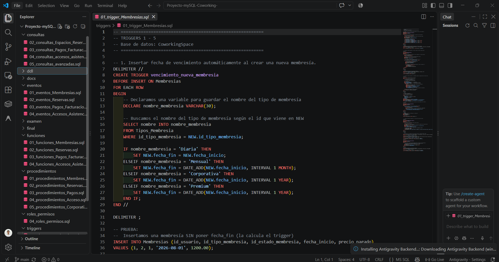

#001
Bases de Datos
mySQL
Desarrollo de una pagina web donde el usuario puede hacer un reporte de una emergencia en la ciudad o barrio. Utilizamos un agente de IA que decide si el daño es critico, bajo, o puede ser un posible spam. Tambien desarrollamos un chatbot por telegram donde envia todos los reportes realizados en la pagina web y el usuario tambien puede mirar los reportes que el ha hecho.
n8nJavaScriptTelegram